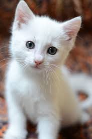
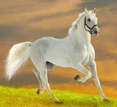
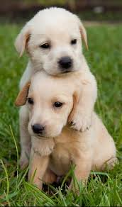

A Fierce African Lion
A majestic lion with a golden mane, piercing eyes, and a powerful, graceful stance. The king of the savannah also known as the "King Of The Jungle",exuding strength, confidence, and untamed wild beauty.
My Name Is Ariba Araoluwa, I am A Web Developer And I love Tech.
Like I said in my first website(I am A student from Queen's College,Yaba Lagos.)
In this Program i would like to present My css style, using External css
So Below is something short i just did in about 30 to 45 mins😋😎
👇👇👇👇👇
A majestic lion with a golden mane, piercing eyes, and a powerful, graceful stance. The king of the savannah also known as the "King Of The Jungle",exuding strength, confidence, and untamed wild beauty.

This is a fluffy white kitten with bright, curious eyes and soft fur that gives it a gentle, angelic look.🐾 It looks playful yet calm, the kind of kitten that melts hearts at first sight. 💖

A unicorn is a mythical horse-like creature with a single, spiraling horn on its forehead, often symbolizing purity and magic. It is usually depicted as graceful, white, and radiant.
